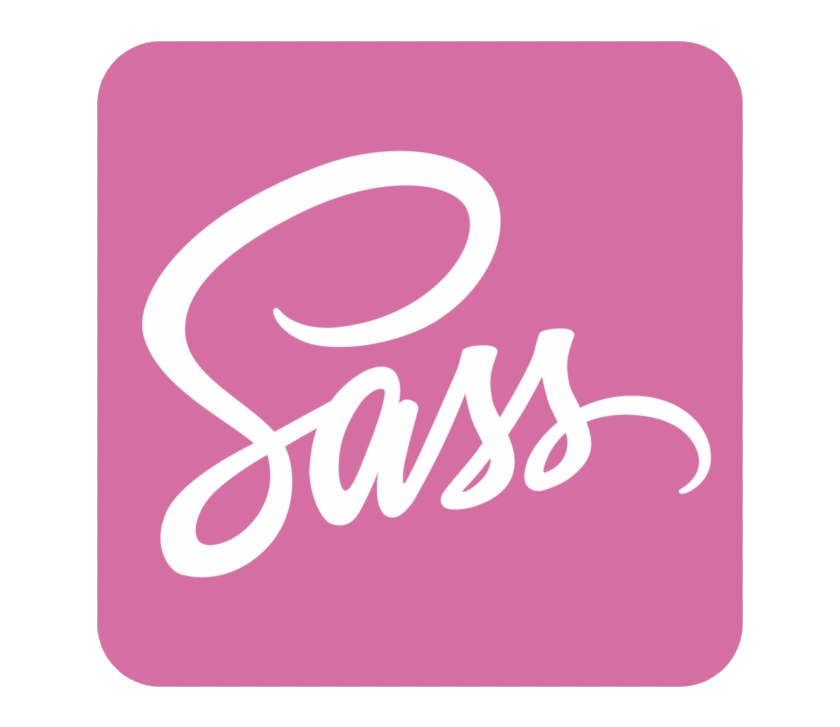

<mat-toolbar color="primary">
  <h1>Mathew Begg</h1>
</mat-toolbar>
<nav mat-tab-nav-bar mat-stretch-tabs>
  <a
    mat-tab-link
    *ngFor="let page of pages"
    (click)="activePage = page"
    [active]="activePage == page"
    [routerLink]="page.path"
  >
    {{ page.name }}
  </a>
</nav>
<div class="content-area">
  <router-outlet></router-outlet>
  <div class="logo-container">
    
    
    
    
    
    
    
    
    
    
    
    
    
    
  </div>
</div>
